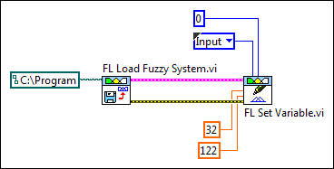

You can use the Variables VIs to modify the linguistic variables in a fuzzy system. Complete the following steps to modify the range of the Temperature input linguistic variable of the greenhouse fuzzy system to use degrees Fahrenheit instead of degrees Celsius.
Add the FL Set Variable VI to the block diagram. This VI modifies the name, range, or membership functions of a linguistic variable in a fuzzy system.
Right-click the input/output input of the FL Set Variable VI and select Create�Constant from the shortcut menu.
Select Input from the input/output constant to specify that you want to modify an input linguistic variable.
Right-click the variable index input of the FL Set Variable VI and select Create�Constant from the shortcut menu.
Enter 0 in the variable index constant to specify that you want to modify the first linguistic variable. The index is zero-based and corresponds to the order in which the linguistic variable was created. Recall that the Temperature variable is the first input linguistic variable in the fuzzy system.
Create constants for the minimum and maximum inputs of the FL Set Variable VI and set them to 32 and 122, respectively. This new range represents the possible temperature, in degrees Fahrenheit, inside the greenhouse. The block diagram now resembles the following image:

Save the VI.
This VI sets the new range of the Temperature variable when it runs. However, you still must modify the membership functions of the Temperature variable to complete the Celsius to Fahrenheit conversion.